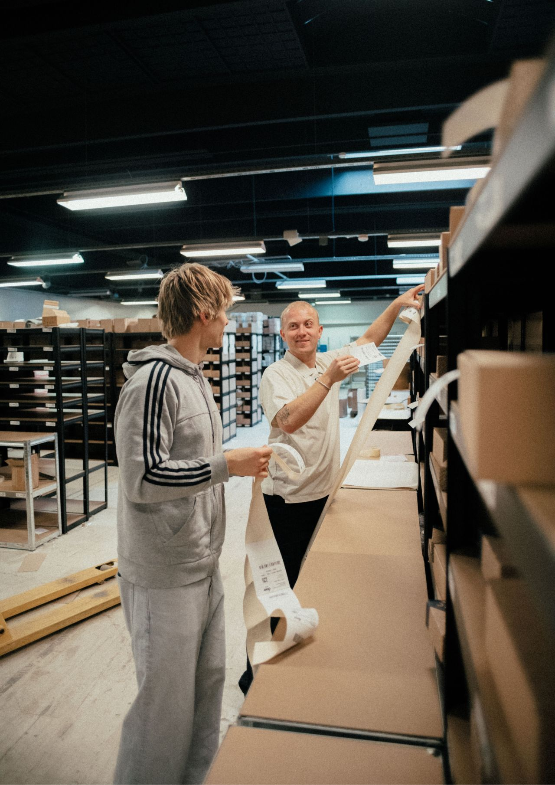
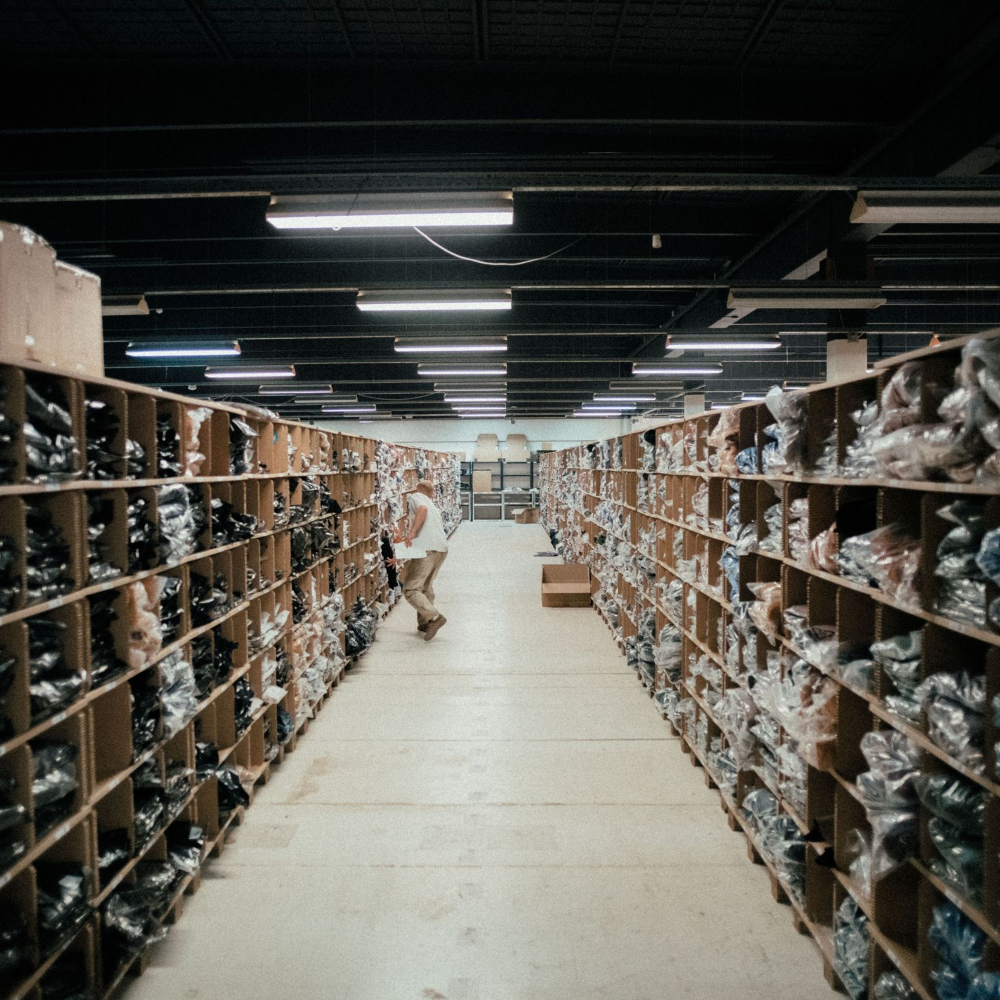
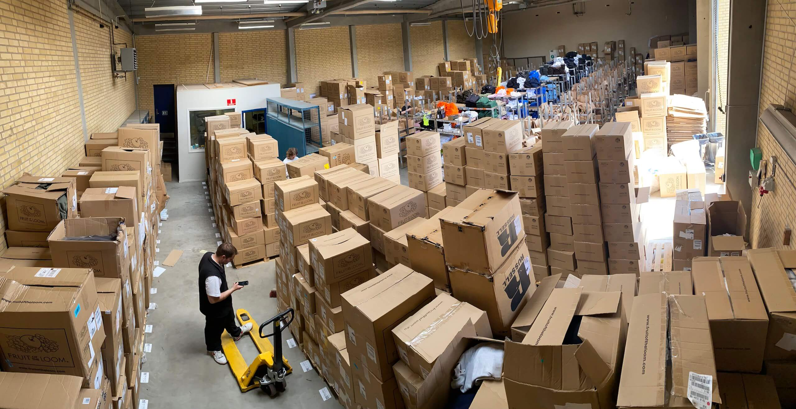
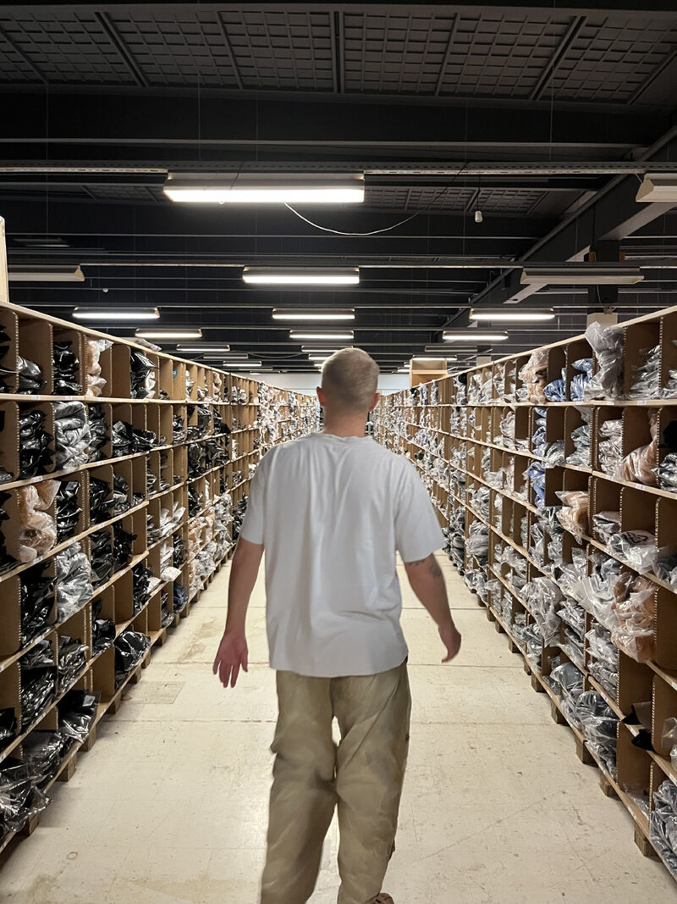
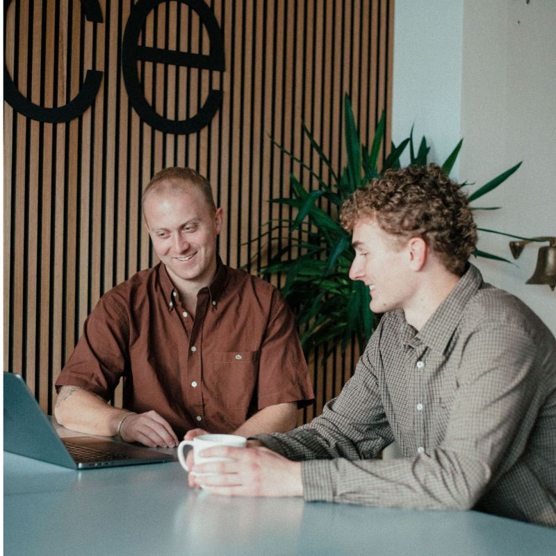
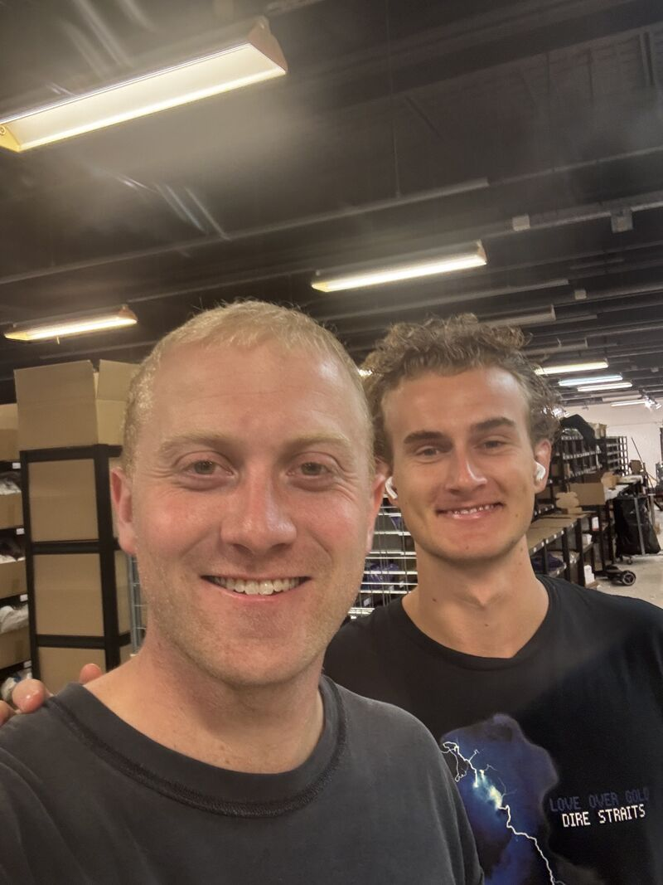

Når en e-handelsvirksomhed vokser, bliver lageret ofte den primære flaskehals. Mange oplever, at flere ordrer blot resulterer i ansættelse af flere medarbejdere — uden at effektiviteten per medarbejder forbedres. Hos lagerhotellet MuraMura i Aarhus N har man valgt en radikalt anderledes tilgang.
Ved at kombinere en gennemtænkt lagerindretning med SmartPack som WMS-rygrad har MuraMura formået at hyperoptimere medarbejdernes arbejdsflow til et niveau, der langt overstiger branchestandarden.
Resultat på en stor kampagnedag: 17.577 pluk · 11.113 pakker · 117 arbejdstimer · 275% performance vs. standard
Data er fra en dag med markant højere volumen end normalt — efter en kundes kampagne. Det er her systemet og indretningen testes for alvor.
MuraMura: Struktur og energi i Aarhus N
MuraMura er ikke et traditionelt lagerhotel. De er en moderne e-commerce outsourcing partner med speciale i brands hvor detaljen tæller: mode, smykker og sportswear. Lagerhotellet i Aarhus N er bygget på en filosofi om, at struktur er fundamentet for kvalitet — og at glade medarbejdere, der tager ejerskab, laver færre fejl.
MuraMura tilbyder det fulde spektrum: fulfillment, pluk & pak, returhåndtering, kundeservice, content studio og kontorhotel. Det, der adskiller dem, er ikke bredden — det er intensiteten og de målbare resultater.


Udfordringen: at eliminere spildtid
I et traditionelt lagerhotel bruges en uforholdsmæssig stor del af arbejdsdagen på at gå mellem reolerne. Gangafstand er den største tidsrøver. Uden intelligent ruteoptimering og dynamiske plukkeprofiler ender medarbejderne med at krydse de samme gange gentagne gange.
MuraMura stod over for den klassiske udfordring: Hvordan skalerer vi driften og håndterer en voksende mængde komplekse ordrer — særligt inden for mode og smykker, som kræver præcision — uden at omkostningerne til mandetimer eksploderer?
Svaret lå ikke i at løbe hurtigere. Det lå i at arbejde smartere.
Løsningen: SmartPack + datadrevet lagerindretning
MuraMura implementerede SmartPack som operations-platform og kombinerede det med tre konkrete tiltag:
1. Intelligente plukkeprofiler. I stedet for single-order picking grupperer SmartPack ordrer der indeholder varer fra de samme lokationer. En medarbejder plukker til mange kunder på én enkelt tur.
2. ABC-optimeret indretning. Fast-movers (A-varer) er placeret strategisk tæt på pakkestationerne. SmartPack overvåger løbende plukkefrekvenser og foreslår flytninger, så lagerets geografi altid afspejler den aktuelle efterspørgsel.
3. Ruteoptimering. Systemet beregner den korteste og mest logiske rute for hvert pluk. Ingen zig-zag. Ingen unødige skridt.

Resultatet: performance i særklasse
Data fra en specifik kampagnedag illustrerer effekten — en dag med markant højere ordreindgang end normalt, efter en af MuraMuras kunders kampagnekørsler. Det er præcis her systemet og lagerindretningen testes: ikke når det er roligt, men når volumenet rammer for alvor. Tallene er fra MuraMuras eget performance-dashboard i SmartPack.
(branchestandard: flere meter)
gennemsnit for hele teamet
(Effective Hours-måling)
10,24 km samlet gangafstand
117 faktiske arbejdstimer
på den pågældende dag
Gangafstand: under 60 centimeter per pluk
Det mest slående tal er forholdet mellem pluk og gangafstand. På den pågældende dag gennemførte teamet 17.577 pluk. Den samlede gangafstand var blot 10,24 kilometer — svarende til 0,58 meter per pluk.
I et traditionelt uoptimeret lager kan dette tal nemt ligge på adskillige meter. Denne ekstremt lave gangafstand er det ultimative bevis på, at plukkeprofiler og ABC-indretning fungerer optimalt.
Eksekveringshastighed: 150 pluk i timen
Teamet præsterede 17.577 pluk og pakkede 11.113 pakker på 117,1 faktiske arbejdstimer. Det giver et gennemsnit for hele teamet på:
- 150 pluk i timen
- 95 pakkede ordrer i timen
Top-performeren på dagen håndterede 3.945 pakker på 16,3 timer — over 240 pakker i timen. Det kan kun lade sig gøre, fordi systemet serverer opgaverne så logisk og sekventielt, at flowet aldrig brydes.
Performance Percentage: 275% over standard
SmartPack måler "Effective Hours" — den estimerede standardtid for de udførte opgaver baseret på branchegennemsnit. For dagens volumen var estimatet 322,5 Effective Hours. MuraMuras team klarede det på 117,1 Work Hours.
Det svarer til en gennemsnitlig Performance Percentage på 275,5%. Teamet arbejder næsten tre gange så effektivt som den forventede standard — og kan håndtere tre gange så stor volumen med samme bemanding som et uoptimeret setup.



Hvad det betyder for dig som webshop
MuraMura er særligt relevante for brands inden for mode, smykker og sportswear — segmenter der kræver omhyggelig håndtering og et skarpt øje for detaljen. De håndterer sæsoner, returneringer, quality check og branded unboxing-oplevelser.
Ydelserne inkluderer: fulfillment, pluk & pak, returhåndtering, kundeservice, content studio (produktfotografering) og kontorfaciliteter tæt på lageret.
Sådan får du adgang: MuraMura kører SmartPack som platform. Som kunde får du direkte portaladgang til dit lager, realtids lagerstatus og automatisk fulfillment-feedback til din webshop (Shopify, WooCommerce m.fl.).
Konklusion
MuraMuras brug af SmartPack er et mønstereksempel på, at fremtidens lagerdrift ikke handler om rå muskelkraft, men om systemintelligens. Ved konsekvent at arbejde med plukkeprofiler og optimere den fysiske indretning efter data, har de skabt et arbejdsmiljø, hvor spildtid er minimeret og performance maksimeret.
For e-handelsvirksomheder demonstrerer dette case-studie, at investeringen i et intelligent WMS som SmartPack — kombineret med en dedikeret indsats for at hyperoptimere arbejdsflowet — kan aflæses direkte på bundlinjen: reducerede lønomkostninger og markant øget kapacitet.
👉 Vil du vide mere om MuraMura eller andre SmartPack-lagerhoteller? Kontakt SmartPack eller se 3PL-rammeaftalen.